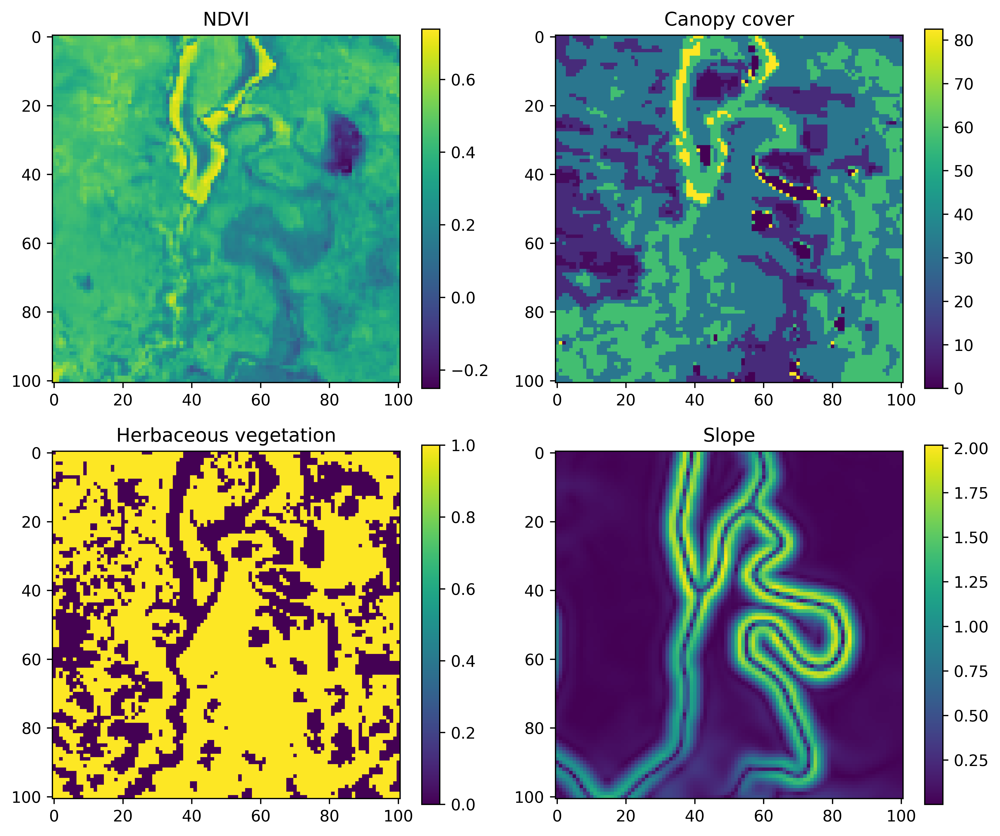
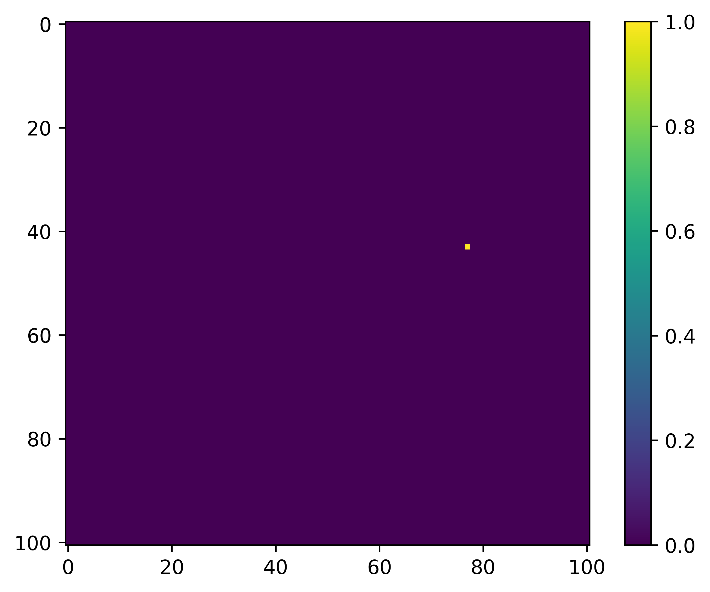
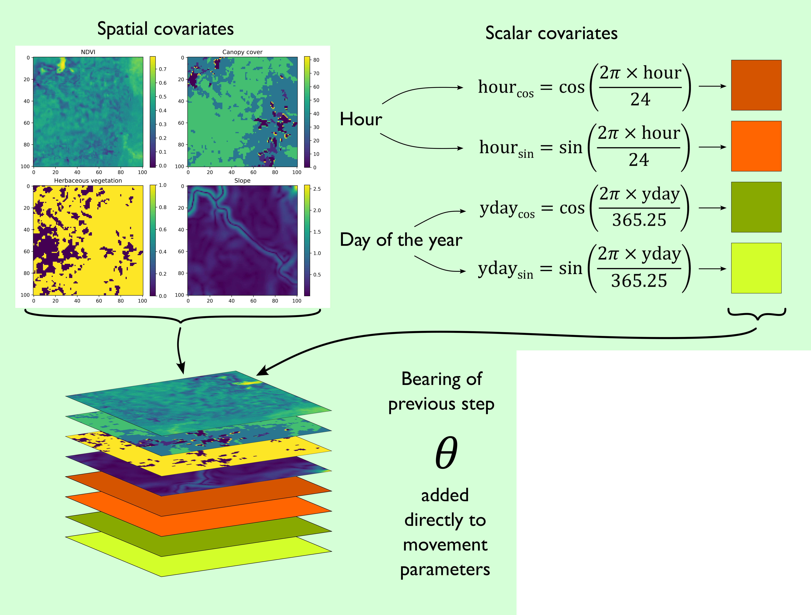
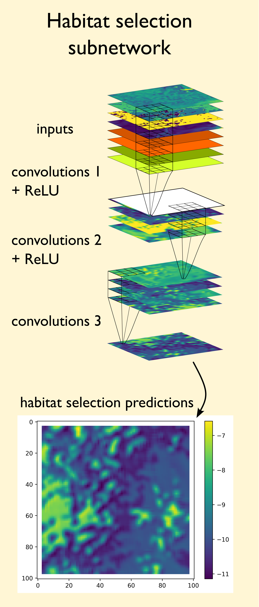
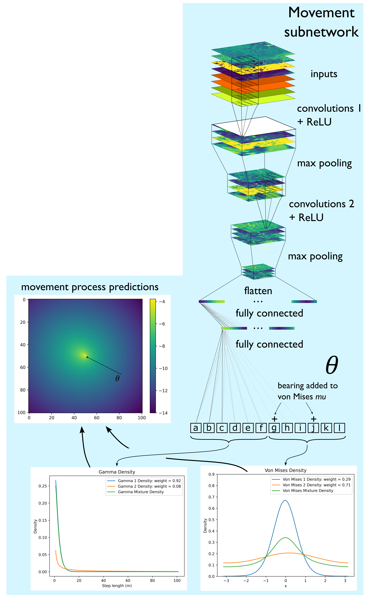

deepSSF Model Overview
![]()
If you haven’t already, I recommend checking out the Step Selection Intuition tab, which should hopefully provide some intuition about step selection and step selection functions (SSFs), which is the foundation for how we set up the deepSSF model.
As our focus is on prediction, we want a model that is flexible and can represent the complicated movement and habitat selection behaviour of our species. For this we kept the general structure of step selection functions (SSFs) Signer, Fieberg, and Avgar (2019), but replaced the conditional logistic regression habitat selection and movement components with deep learning components such as convolutional layers and fully-connected layers.
The inputs and outputs of the deepSSF model are essentially the same as for SSFs (although by using convolutional layers we can input spatial layers directly rather than having to randomly sample availability), it is just that the model that encodes the relationship between the GPS data, the habitat, and time are more flexible. This has benefits for predictability, but some costs for interpretability. Be we kept the deepSSF model relatively simple (compared to most deep learning models), and by separating the movement and habitat selection processes, we still have some explainability, but it is different than interpreting the coefficients from an SSF.
Essentially, we have some set of covariates, and for the deepSSF model we want to crop out local layers of a size that includes most of the observed steps. For the water buffalo we made the local layers 101 x 101 cells (at 25 m each), which cover around 97% of the observed steps (i.e. imagine if you were to plot all of the ‘next steps’ from the central cell).
An example for a single step may look something like the image below, where the current location is in the central cell.

What we are trying to predict, or the target, is the location of the next step, which might look something like this:

The way that we do this is essentially the same as was described in the Step Selection Intuition tab - we want to maximise the probability of where the next step is going to be based on the underlying habitat covariates (replacing the RSF-like component), and generate a movement kernel that replicates the observed movement dynamics, which also means giving a high probability weight to where the next steps were.
Similarly to the SSF approach, we have dinstinct but interacting ‘submodels’ for the habitat selection and the movement processes, which we call ‘subnetworks’, as they are parts of the full network (we use the term network, which is often used to describe neural networks, and model interchangeably). One is constrained to be responsible only for the habitat selection, by doing the same transformation equally across each local layer using convolutional layers, and the other is constrained to be responsible only for the movement, as it outputs parameters that describe step length and turning angle distributions, which form the movement kernel.
Model architecture
To be analogous to SSFs, there are two subnetworks representing two processes of animal movement: a habitat selection and a movement process subnetwork.
Inputs
Both subnetworks receive the same inputs, which are spatial layers such as environmental covariates, scalar covariates such as the hour, the day of the year (yday, also called ‘ordinal’ or ‘Julian’ day), and the movement process also receives the bearing of the previous step. The periodic components (i.e. hour and yday) are decomposed into sine and cosine components to wrap continuously as a period, before being converted into spatial layers with constant values so they can be processed by the convolutional layer. To ensure that the turning angles are relative to the previous step, the bearing of the previous step is added directly to the predicted mean (\(\mu\)) parameters of von Mises distributions.

This gives us a stack of local covariates which we can pass to the subnetworks.
Habitat selection subnetwork
For the habitat selection process, we need to go from our spatial covariates to a habitat selection probability surface. We can do this using convolutional layers, which use convolution filters to process spatial information and transform it into something else.
Firstly, we set the target of the model (what the model is trying to predict) to be where the next step is, we do this by extracting the habitat selection probability at the location of the next step. When the model makes more accurate predictions, these values will be higher. The model will then try to increase the probability at the locations of the observed next steps (by minimising the negative-log of this value).
Because the convolution filters apply their operations equally across the spatial covariates, they can never actually predict the next-step, but they will increase the habitat selection probability for values and features in the landscape that are associated with observed next-steps.
The result of this habitat selection process is that we input spatial covariates (and temporal covariates that are converted to grids of the same size), and the model transforms these into a habitat selection probability surface, with higher probabilities for environmental features that are associated with observed next steps.
The convolutional layers have parameters set to ensure that the output has the same spatial extent as the input, resulting in spatial, non-linear transformations of the input covariates, where all inputs can interact, to produce a probability surface (on the log-scale) describing the likelihood of moving to any cell based on the surrounding environment.

Movement subnetwork
The movement process subnetwork also uses convolutional layers, although this time with max pooling to reduce the dimensionality, to extract features from the input covariates that are salient to movement.
The outputs the the convolutional layers are then processed by fully connected layers, which can reduce the dimensionality down to a small number of output values. These predicted outputs of the movement subnetwork can be any number of parameters that govern a movement distribution.
If we wanted a single gamma distribution (described by a shape and scale parameter) and a von Mises distribution (described by a mean, \(\mu\), and concentration, \(\kappa\) parameter), we could make the neural network output four numbers, a, b, c and d. We could then take a and b to be our shape and scale, and using the gamma density function turn these into a gamma distribution, and the c and d to be a \(\mu\) and \(\kappa\).
We can then turn these into the two-dimensional movement kernel:

Because we can make the movement subnetwork output any number of parameters (it doesn’t know they are parameters of distributions after all), we can make the movement kernel more complex. This allowed us to use finite mixtures of two Gamma distributions for the step lengths and two von Mises distributions for the turning angles. This just means that we have two gamma distributions for step lengths which are added together, and their relative contribution is denoted by a ‘weight’ parameter. This movement kernel therefore requires a total of 12 predicted parameters - a shape, scale and weight for each Gamma distribution and a \(\mu\), \(\kappa\) and weight for each von Mises distribution, so we make the final output of the movement subnetwork a vector with 12 values.

Full model
As we now have a movement surface and a habitat selection surface, we can combine them into the next-step log-probability surface. Conveniently, both the movement and habitat selection surfaces are outputted on the log-scale, so we simply add them together and normalise the next-step probability surface (such that it sums to one after being exponentiated).
 To highlight the directional persistence, the arrow and \(\theta\) in the movement and next-step predictions denotes the bearing of the previous step, and the red star to the left of the next-step predictions is the location of the observed next step for those inputs.
To highlight the directional persistence, the arrow and \(\theta\) in the movement and next-step predictions denotes the bearing of the previous step, and the red star to the left of the next-step predictions is the location of the observed next step for those inputs.
Training the model
So the model generates these probability surfaces, but how does it know that they are any good?
This is where the loss function comes in. Our loss function is the probability value at the actual location of the next step. We want to maximise the probability values at the location of the next step, so we take the log of the probability value and make it negative (i.e., the negative-log-likelihood), and then minimise that, thereby maximising the next-step probability.
Therefore, if the model predicts let’s say movement parameter values that result in a low probability value at the location of the next step, the model should update its weights to move towards higher probability values. It therefore needs to know which direction to adjust the weights, and by how much. It does this by using the gradient of the loss function with respect to the weights, through a process called ‘backpropagation’. I won’t go into detail here but I suggest you check out the 3Blue1Brown video that covers backpropagation, as well as the rest of the ‘Neural networks’ series - his videos are fantastic!
We can see what the model looks like during training by taking a single set of input covariates, and generating predictions after every epoch (complete iteration through the training data).
Here are the set of covariates again:
And what we are trying to predict, or the target, is the location of the next step, which might look something like this:

All of the parameters start as random values, but as the model learns it starts to pick out certain features of the landscape that buffalo moved towards or away from, and the movement and habitat selection probabilities start to balance as the model gives weight to both processes. As these processes are being trained we can see the loss function decreasing, indicating that the probability values at the observed next step are increasing.
Generating trajectories
The process of generating trajectories is the same as what we showed in the Step Selection Intuition tab:
We have some starting location, the local layers for that point are extracted and run through the model, which generates the next-step probability surface, and a step is sampled according to these probability values.
Here’s an animation of what that looks like for when the model has been trained on Sentinel-2 data:
 The white pixel is the sample of the next step
The white pixel is the sample of the next step